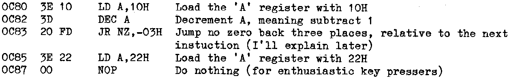

INMC 80 News |
September 1980 – January 1981 · Issue 2 |
| Page 28 of 59 |
|---|
There is another special purpose register in this case uniquely associated with the ‘A’ register, and this is the ‘F’ register, or ‘Flag’ register (also occasionally called the Status Word Register). Back to the trains. The ‘F’ siding is at the end of the ‘A’ siding (but also connected back to the main line). If, on addition, there is a ‘carry’ from the ‘A’ siding, then the extra wagon is shunted into a specific location in the ‘F’ siding reserved for the ‘carry’ from arithmetic and logical operations. So if our addition overflowed, then the ‘Carry flag’ would become set. There is also a flag which will be set if the result of the calculation becomes zero, this is known as the ‘Zero flag’. There are four other flags as well, we’ll deal with them another time.
An important point has been made here, it’s the flags which give the processor its intelligence. By testing the condition of the flags a decision can be made. For example, suppose we wished to count down from 40H to 0 (remember the ‘H’ means HEX). We could load ‘A’ with 40H, and then go into a simple loop which subtracted 01H from the accumulator then tested the flags to see if the ‘Z’ flag had been set. If the ‘Z’ flag was still unset, then the program would go through the loop again, round and round until such time as the ‘Z’ flag did become set. Enough reading, let’s prove it. We’ll write a little program that does just that. I expect you to read the Software Manual and discover how to use the ‘M’ command, and I’ll write the code in two ways, firstly as an object code listing, and secondly as an assembler (or source) listing. I’ll explain a bit as we go along, but not too much (I believe in making my readers work, I had to learn the hard way, so why not you). We’ll only count from 10H to 0 otherwise it will become tedious.
Object code
Source code

Now what we have said is load the ‘A’ register with 10H. Decrement the ‘A’ register by 1 (decrements are always by 1). Test the ‘Z’ flag, and if this says ‘Not Zero’ then move back three places from the start of the next instruction.
Why from “the start of the next instruction”? Well, when the processor meets an instruction the first thing that instruction does is to tell the processor how many bytes in that instruction. There might be up to four bytes in an instruction. The processor has to read each byte in turn, and by the time it has done this the ‘PC’ register has already been incremented so it is already pointing to the next instruction. Don’t forget it’s the job of the ‘PC’ register to ‘keep tabs’ on where the processor is to get the next byte from. So in the case of a jump like this, the ‘PC’ is already pointing to the next instruction by the time it discovers it should have in fact gone backwards not forwards. We didn’t deal with negative HEX numbers in part 1, just take my word for it FDH is actually −03H. If the ‘Z’ flag said the result was zero, then the program would ‘drop though’ the jump instruction to the next instruction (which it was already pointing at), which in this instance is load the ‘A’ register with 22H. I chose 22H to prove that it was the next instruction, and not a magic number the CPU thought of itself. You might like to change the number just to prove I’m right. The NOP (No OPeration) at the end was thrown in in case the ‘Enter’ key was pressed once too often. This program has no ‘END’, so immediately the processor found the next byte it would do unpredictable things, as we haven’t programmed beyond this point. The memory would be full of garbage from the time the computer was turned on.
| Page 28 of 59 |
|---|